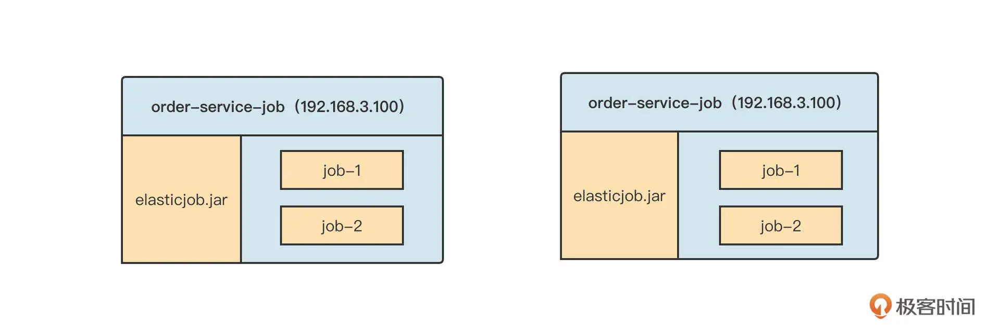
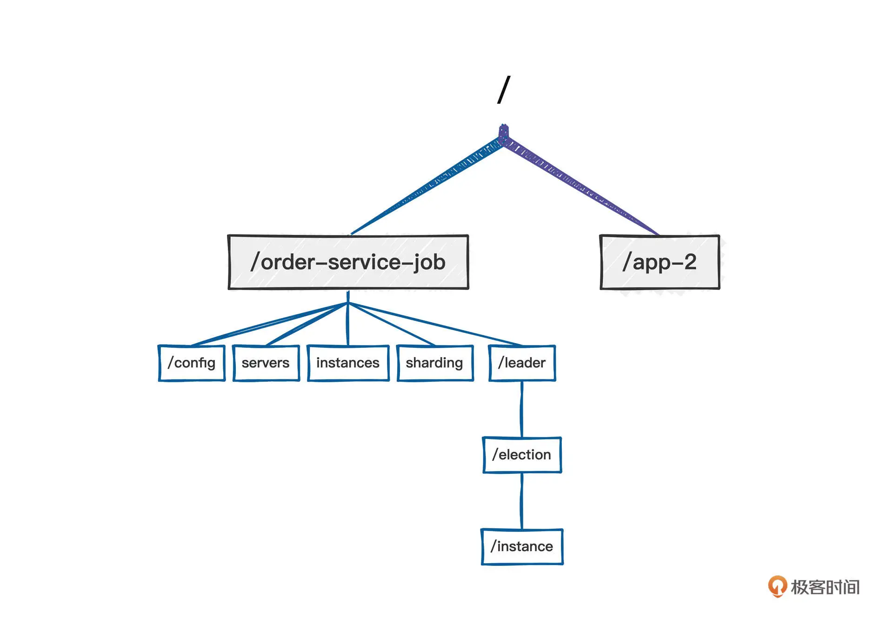
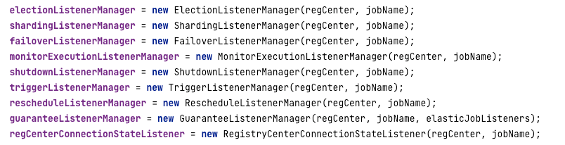
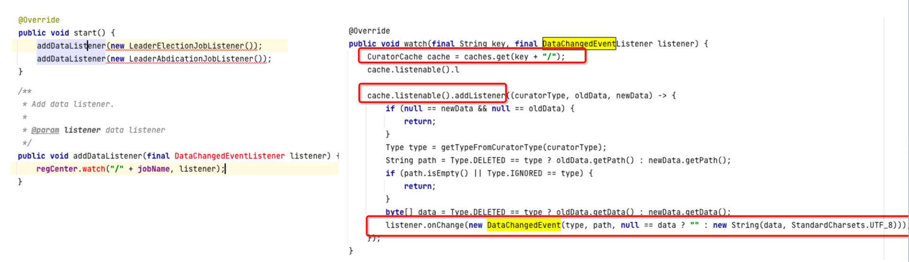
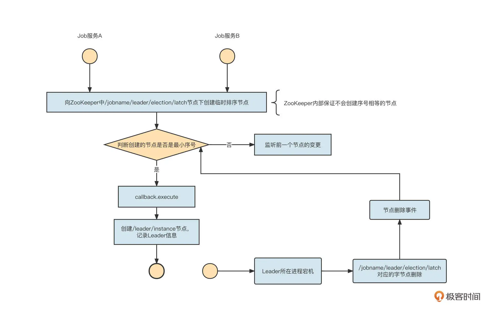
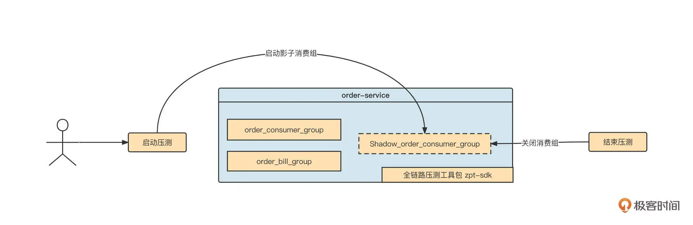
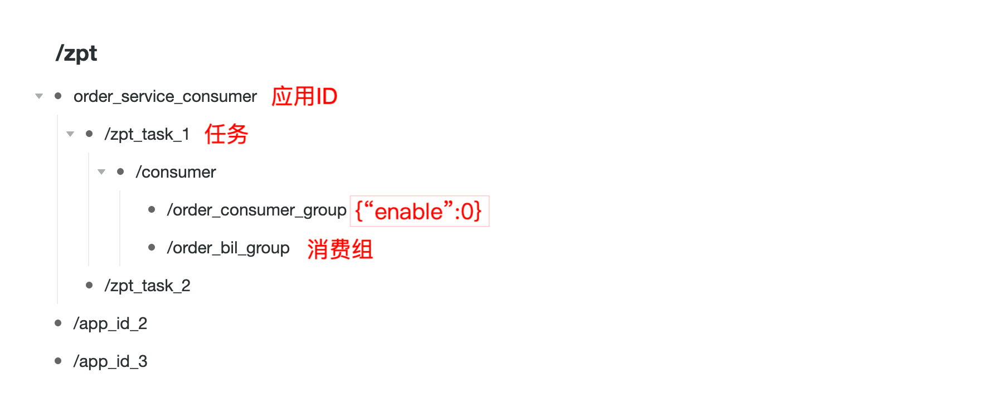
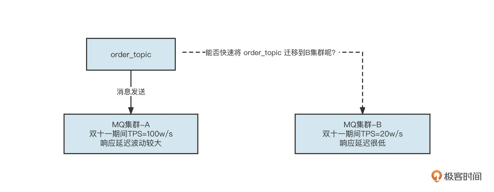
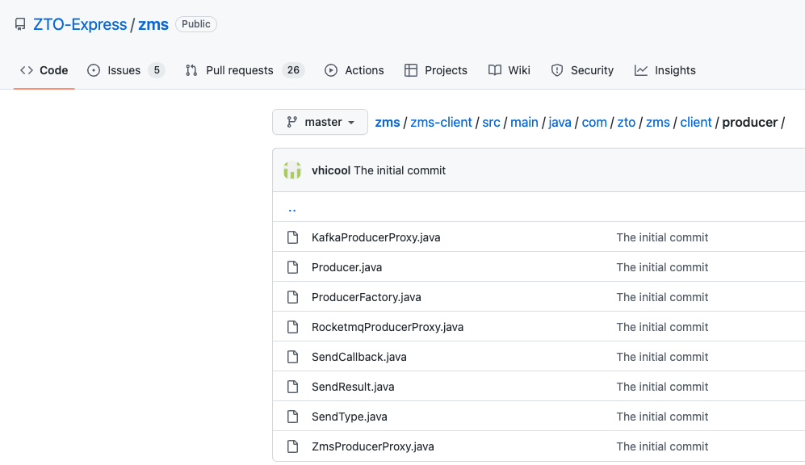

- 00 开篇词 为什么中间件对分布式架构体系来说这么重要？.md.html
- 01 中间件生态（上）：有哪些类型的中间件？.md.html
- 02 中间件生态（下）：同类型的中间件如何进行选型？.md.html
- 03 数组与链表：存储设计的基石有哪些？.md.html
- 04 红黑树：图解红黑树的构造过程与应用场景.md.html
- 05 多线程：多线程编程有哪些常见的设计模式？.md.html
- 06 锁：如何理解锁的同步阻塞队列与条件队列？.md.html
- 07 NIO：手撸一个简易的主从多Reactor线程模型.md.html
- 08 Netty：如何优雅地处理网络读写，制定网络通信协议？.md.html
- 08 加餐 中间件底层的通用设计理念.md.html
- 09 技术选型：如何选择微服务框架和注册中心？.md.html
- 10 设计原理：Dubbo核心设计原理剖析.md.html
- 11 案例：如何基于Dubbo进行网关设计？.md.html
- 12 案例：如何实现蓝绿发布？.md.html
- 13 技术选型：如何根据应用场景选择合适的消息中间件？.md.html
- 14 性能之道：RocketMQ与Kafka高性能设计对比.md.html
- 15 案例：消息中间件如何实现蓝绿？.md.html
- 16 案例：如何提升RocketMQ顺序消费性能？.md.html
- 17 运维：如何运维日均亿级的消息集群？.md.html
- 18 案例：如何排查RocketMQ消息发送超时故障？.md.html
- 19 案例：如何排查RocketMQ消息消费积压问题？.md.html
- 20 技术选型：分布式定时调度框架的功能和未来.md.html
- 21 设计理念：如何基于ZooKeeper设计准实时架构？.md.html
- 22 案例：使用分布式调度框架该考虑哪些问题？.md.html
- 23 案例：如何在生产环境进行全链路压测？.md.html
- 大咖助阵 高楼：我们应该如何学习中间件？.md.html
- 用户故事 学而时习之，不亦乐乎.md.html
- 用户故事 愿做技术的追梦人.md.html
- 用户故事 浪费时间也是为了珍惜时间.md.html
- 结束语 坚持不懈，越努力越幸运.md.html
- 捐赠
21 设计理念：如何基于ZooKeeper设计准实时架构？
你好，我是丁威。
先跟你分享一段我的经历吧。记得我在尝试学习分布式调度框架时，因为我们公司采用的分布式调度框架是 ElasticJob，所以我决定以 ElasticJob 为突破口，通过研读 ElasticJob 的源码，深入探究定时调度框架的实现原理。
在阅读 ElasticJob 源码的过程中，它灵活使用 ZooKeeper 来实现多进程协作的机制让我印象深刻，这里蕴藏着互联网一种通用的架构设计理念，那就是：基于 ZooKeeper 实现元信息配置管理与实时感知。
上节课中我们也重点提到过，ElasticJob 可以实现分布式部署、并且支持数据分片，它同时还支持故障转移机制，其实这一切都是依托 ZooKeeper 来实现的。
基于 ZooKeeper 的事件通知机制
ElasticJob 的架构采取的是去中心化设计，也就是说，ElasticJob 在集群部署时，各个节点之间没有主从之分，它们的地位都是平等的。并且，ElasticJob 的调度侧重对数据进行分布式处理（也就是数据分片机制），在调度每一个任务之前需要先计算分片信息，然后才能下发给集群内的其他节点来执行。实际部署效果图如下：

在这张图中，order-service-job 应用中创建了两个定时任务 job-1 和 job-2，而且 order-service-job 这个应用部署在两台机器上，也就是说，我们拥有两个调度执行器。那么问题来了，job-1 和 job-2 的分片信息由哪个节点来计算呢？
在 ElasticJob 的实现中，并不是将分片的计算任务固定分配给某一个节点，而是以任务为维度允许各个调度器参与竞选，竞选成功的调度器成为该任务的 Leader 节点，竞选失败的节点成为备选节点。备选节点只能在 Leader 节点宕机时重新竞争，选举出新的 Leader 并接管前任 Leader 的工作，从而实现高可用。
那具体如何实现呢？原来，ElasticJob 利用了 ZooKeeper 的强一致性与事件监听机制。
当一个任务需要被调度时，调度器会首先将任务注册到 ZooKeeper 中，具体操作为在 ZooKeeper 中创建对应的节点。ElasticJob 中的任务在 ZooKeeper 中的目录布局如下：

简单说明一下各个节点的用途。
config：存放任务的配置信息。
servers：存放任务调度器服务器 IP 地址。
instances：存放任务调度器实例（IP+ 进程）。
sharding：存放任务的分片信息。
leader/election/instance：存放任务的 Leader 信息。
创建好对应的节点之后，就要根据不同的业务处理注册事件监听了。在 ElasticJob 中，根据不同的任务会创建如下事件监听管理器，从而完成核心功能：

我们这节课重点关注的是 ElectionListenerManager 的实现细节，掌握基于 ZooKeeper 事件通知的编程技巧。
ElectionListenerManager 会在内部进行事件注册：

事件注册的底层使用的是 ZooKeeper 的 watch，每一个监听器在一个特定的节点处监听，一旦节点信息发生变化，ZooKeeper 就会通知执行注册的事件监听器，执行对应的业务处理。
一个节点信息的变化包括：节点创建、节点值内容变更、节点删除、子节点新增、子节点删除、子节点内容变更等。
调度器监听了 ZooKeeper 中的任务节点之后，一旦任务节点下任何一个子节点发生变化，调度器 Leader 选举监听器就会得到通知，进而执行 LeaderElectionJobListener 的 onChange 方法，触发选举。
接下来我们结合核心代码实现，来学习一下如何使用 Zookeeper 来实现主节点选举。
ElasticJob 直接使用了 Apache Curator 开源框架（ZooKeeper 客户端 API 类库）提供的实现类（org.apache.curator.framework.recipes.leader.LeaderLatch），具体代码如下：
public void executeInLeader(final String key, final LeaderExecutionCallback callback) {
try (LeaderLatch latch = new LeaderLatch(client, key)) { // @1
latch.start(); // @2
latch.await();
callback.execute();
//CHECKSTYLE:OFF
} catch (final Exception ex) {
//CHECKSTYLE:ON
handleException(ex);
}
}
我们解读一下关键代码。LeaderLatch 需要传入两个参数：CuratorFramework client 和 latchPath。
CuratorFramework client 是 Curator 的框架客户端。latchPath 则是锁节点路径，ElasticJob 的锁节点路径为：/{namespace}/{Jobname}/leader/election/latch。
启动 LeaderLatch 的 start 方法之后，ZooKeeper 客户端会尝试去 latchPath 路径下创建一个临时顺序节点。如果创建的节点序号最小，LeaderLatch 的 await 方法会返回后执行 LeaderExecutionCallback 的 execute 方法，如果存放具体实例的节点 ({namespace}/{jobname}/leader/election/instance) 不存在，那就要创建这个临时节点，节点存储的内容为 IP 地址 @-@进程 ID，也就是说创建一个临时节点，记录当前任务的 Leader 信息，从而完成选举。
当 Leader 所在进程宕机后，在锁节点路径（/leader/election/latch）中创建的临时顺序节点会被删除，并且删除事件能够被其他节点感知，继而能够及时重新选举 Leader，实现 Leader 的高可用。

经过上面两个步骤，我们就基于 ZooKeeper 轻松实现了分布式环境下集群的选举功能。我们再来总结一下基于 ZooKeeper 事件监听机制的编程要点。
- 在 Zookeeper 中创建对应的节点。
节点的类型通常分为临时节点与持久节点。如果是存放静态信息（例如配置信息），我们通常使用持久节点；如果是存储运行时信息，则要创建临时节点。当会话失效后，临时节点会自动删除。
- 在对应节点通过 watch 机制注册事件回调机制。
如果你对这一机制感兴趣，建议你看看 ElasticJob 在这方面的源码，我的源码分析专栏 应该也可以给你提供一些帮助。
应用案例
深入学习一款中间件，不仅能让我们了解中间件的底层实现细节，还能学到一些设计理念，那 ElasticJob 这种基于 ZooKeeper 实现元数据动态感知的设计模式会有哪些应用实战呢？
我想分享两个我在工作中遇到的实际场景。
案例一
2019 年，我刚来到中通，我在负责的全链路压测项目需要在压测任务开启后自动启动影子消费组，然后等压测结束后，在不重启应用程序的情况下关闭影子消费组。我们在释放线程资源时，就用到了 ZooKeeper 的事件通知机制。
首先我们来图解一下当时的需求：

我们解读一下具体的实现思路。
第一步，在压测任务配置界面中，提供对应的配置项，将本次压测任务需要关联的消费组存储到数据库中，同时持久到 ZooKeeper 的一个指定目录中，如下图所示：

ZooKeeper 中的目录设计结构如下。
/zpt：全链路压测的根目录。
/zpt/order_service_consumer：应用 Aphid。
/zpt/order_service_consumer/zpt_task_1：压测任务。
/zpt/order_service_consumer/zpt_task_1/order_bil_group：具体的消费组。
在这里，每一个消费组节点存储的值为 JSON 格式，其中，从 enable 字段可以看出该消费组的影子消费组是否需要启动，默认为 0 表示不启动。
第二步，启动应用程序时，应用程序会根据应用自身的 AppID 去 ZooKeeper 中查找所有的消费组，提取出各个消费组的 enable 属性，如果 enable 属性如果为 1，则立即启动影子消费组。
同时，我们还要监听 /zpt/order_service_consumer 节点，一旦该节点下任意一个子节点发生变化，zpt-sdk 就能收到一个事件通知。
在需要进行全链路压测时，用户如果在全链路压测页面启动压测任务，就将该任务下消费组的 enable 属性设置为 1，同时更新 ZooKeeper 中的值。一旦节点的值发生变化，zpt-sdk 将收到一个节点变更事件，并启动对应消费组的影子消费组。
当停止全链路压测时，压测控制台将对应消费组在 ZooKeeper 中的值修改为 0，这样 zpt 同样会收到一个事件通知，从而动态停止消费组。
这样，我们在不重启应用程序的情况下就实现了影子消费组的启动与停止。
注册事件的关键代码如下：
private CuratorFramework client; // carator客户端
public static void addDataListener(String path, TreeCacheListener listener) { //注册事件监听
TreeCache cache = instance.caches.get(path);
if(cache == null ) {
cache = addCacheData(path);
}
cache.getListenable().addListener(listener);
}
事件监听器中的关键代码如下：
class MqConsumerGroupDataNodeListener extends TreeCacheListener {
protected void dataChanged(String path, TreeCacheEvent.Type eventType, String data) {
//首先触发事件的节点，判断路径是否为消费组的路径，如果不是，忽略本次处理
if(StringUtils.isBlank(path) || !ZptNodePath.isMQConsumerGroupDataNode(path)) {
logger.warn(String.format("path:%s is empty or is not a consumerGroup path.", path));
return;
}
try {
String consumerGroup = getLastKey(path);
if(logger.isDebugEnabled()) {
logger.debug(String.format("节点path:%s,节点值:%s", path, data));
}
if(!Zpt.isConsumerGroup(consumerGroup)) {
logger.info(String.format("消费组:%s,不属于当前应用提供的，故无需订阅", consumerGroup));
return;
}
// 如果节点的变更类型为删除，则直接停止消费组
if(StringUtils.isBlank(data) || TreeCacheEvent.Type.NODE_REMOVED.equals(eventType)) {
invokeListener(consumerGroup, false);
}
// 取得节点的值
MqConsumerVo mqVo = JsonUtil.parse(data, MqConsumerVo.class);
// 如果为空，或则为0，则停止消费组
if(mqVo == null || StringUtils.isBlank(mqVo.getEnable()) || "0".equals(mqVo.getEnable())) {
invokeListener(consumerGroup, false);
return;
} else { // 否则启动消费组。
invokeListener(consumerGroup, true);
return;
}
} catch (Throwable e) {
logger.error("zk mq consumerGroup manager dataChange error", e);
}
}
}
案例二
在这节课的最后，我们再看一下另外一个案例：消息中间件 SDK 的核心设计理念。
我们公司对消息中间件的消息发送与消息消费做了统一的封装，对用户弱化了集群的概念，用户发送、消费消息时，不需要知道主题所在的集群地址，相关的 API 如下所示：
public static SendResult send(String topic, SimpleMessage simpleMessage)
public static void subscribe(String consumerGroup, MessageListener listener)
那问题来了，我们在调用消息发送 API 时，如何正确路由到真实的消息集群呢？
其实，我们公司对主题、消费组进行了强管控，项目组在使用主题、消费组之前，需要通过消息运维平台进行申请，审批通过后会将主题分配到对应的物理集群上，并会将 topic 的元数据分别存储到数据库和 ZooKeeper 中。因为这属于配置类信息，所以这一类节点会创建为持久化节点。
这样，消息发送 API 在初次发送主题时，会根据主题的名称在 ZooKeeper 中查找主题的元信息，包括主题的类型（RocketMQ/Kafka）、所在的集群地址（NameServer 地址或 Kafka Broker 地址）等，然后构建对应的消息发送客户端进行消息发送。
那我们为什么要将主题、消费组的信息存储到 ZooKeeper 中呢？
这是因为，为了便于高效运维，我们对主题、消费组的使用方屏蔽了集群相关的信息，你可以看看下面这个场景：

你能在不重启应用的情况下将 order_topic 从 A 集群迁移到 B 集群吗？
没错，在我们这种架构下，将主题从一个集群迁移到另外一个集群将变得非常简单。
我们只需要在 ZooKeeper 中修改一下 order_topic 的元信息，将维护的集群的信息由集群 A 变更为集群 B，然后 zms-sdk 在监听 order_topic 对应的主题节点时，就能收到主题元信息变更事件了。然后 zms-sdk 会基于新的元信息重新构建一个 MQ Producer 对象，再关闭老的生产者，这样就实现了主题流量的无缝迁移，快速进行故障恢复，极大程度保证了系统的高可用性。
我们公司已经把这个项目开源了，具体的实现代码你可以打开链接查看（ZMS 开源项目）。

总结
好了，这节课我们就介绍到这里了。
这节课我们通过 ElasticJob 分布式环境中的集群部署，引出了 ZooKeeper 来实现多进程协作机制。并着重介绍了基于 ZooKeeper 实现 Leader 选举的方法。我们还总结出了一套互联网中常用的设计模式：基于 ZooKeeper 的事件通知机制。
我还结合我工作中两个真实的技术需求，将 ZooKeeper 作为配置中心，结合事件监听机制实现了不重启项目，在不重启应用程序的情况下，完成了影子消费组和消息发送者的启动与停止。
课后题
最后我也给你留一道题。
请你尝试编写一个功能，使用 curator 开源类库，去监听 ZooKeeper 中的一个节点，打印节点的名称，并能动态感知节点内容的变化、子节点列表的变化。程序编写后，可以通过 ZooKeeper 运维命令去操作节点，从而验证程序的输出值是否正确。
欢迎你在留言区与我交流讨论，我们下节课再见。
© 2019 - 2023 Liangliang Lee. Powered by gin and hexo-theme-book.